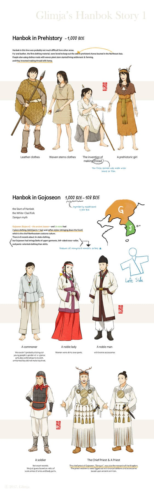

한복은 유목민족인 스키타이에서 영향을 받음. 그래서 말타기와 활쏘기에 편하도록 바지위주로 발전하고 저고리 섶이 왼쪽여밈임.
스키타이가 우리와 유전적 관계는 없고, 교류가 많았다고 함. 실제로 청동기 유물 발굴해보면, 중국과 성분이 다르고 시베리아쪽과 일치하다고 함
반면 중국의 한푸는 남방계가 기원이라 치마위주로 발전함

한복은 유목민족인 스키타이에서 영향을 받음. 그래서 말타기와 활쏘기에 편하도록 바지위주로 발전하고 저고리 섶이 왼쪽여밈임.
스키타이가 우리와 유전적 관계는 없고, 교류가 많았다고 함. 실제로 청동기 유물 발굴해보면, 중국과 성분이 다르고 시베리아쪽과 일치하다고 함
반면 중국의 한푸는 남방계가 기원이라 치마위주로 발전함
자료가 다 어디갔을까
ㄴㄴ 그뜻이 아니라 한푸라는 명칭/컨셉이 2000년대에 만들어진거란거
물론 자료는 다 어디갔을까는 맞음
ㄹㅇ? 왠지 이름도 한복이랑 발음도 비슷하게 했다고 생각했다 일부로 혼동줄라고 그렇게 이름지었나보네
한족옷이라고 한푸긴 한데
https://namu.wiki/w/한푸%20운동
시작은 그냥 민족주의 풀뿌리운동이었음 좋은 취지
근데 국뽕운동이 되면서 그렇게 돼버렸음
고것은 한(漢)의 옷이라 한복.
우리나라는 한(韓)의 옷.
분서갱유
새로만든 단어지 최근만해도 청나라 만주족이 지배했는데 동화했다해도 지배당하던 민족
한송명 이어지지도않고 중국은 다민족 국가라면서ㅋㅋ 한족만 중국을 대표하는것도 웃김
생긴지 백년도 안되는 느그 나라의 전통복장은 인민복 이지 새꺄~
원말 명초 시기 문화적으로 영향을 서로 주고 받고는 했다고 하던데 중국애들이 이 부분들을 자신들에게 유리하게 해석하여
한국이 명나라 의복을 훔쳐갔다고 주장을 많이 하더라고
그런데 음식도 그렇고 문화도 그렇고 옆에 붙어있으면 다 영향받고 그러는건데 뭘 저런걸로 그러는지
분서갱유 문자의옥 문화대혁명 레츠고
근데 원주민 몰아내고 그땅에 나라세우면 전통 복장이 두개가 되는건가
이런 주장은 별로 건강한 게 아닌 것 같다. 왜 자꾸 문화적으로 단절돼서 독자적으로 발달했다고 주장하고 싶어 하는 건지 모르겠음.
북쪽 방향으로 유전적으로 우리와 가장 가까운 민족은 여진족이다. 청나라 세운 놈들 말이다. 두 민족 사이에 가까운 공통조상이 있다는 의미고, 필연적으로 어느 시점에는 같은 옷을 입고 있었다는 얘기다.
그 긴 시간 동안 두 집단이 문화적 교류를 안 한 것도 아니고, 각각이 어떤 문화적 영향을 받았다고 해서 기존의 문화가 사라지는 것도 아니고.
당장 서양의 외국인한테 중국 전통의상하고 한국 전통의상 보여주면 외견상 비슷하다고 밖에는 생각이 안 될 텐데, 걔들한테 '단절된 독자적인 문화가 아주 우연히도 서로 닮은 거'라고 주장할 거임?
'중국이 아니라 저 멀리 동유럽 살던 스키타이가 한복의 원조'라고 하면 뭐가 좀 나아짐? 우린 뭐 스키타이 만나기 전에는 발가벗고 다녔음? 아니면 뭐, 스키타이 만나고 나서는 우리가 걔네 옷 카피떠서 입었고 우리 건 다 사라짐?
그냥 자연스럽게 교류하면서 형성된 문화를 가지고 왜 자꾸 원조 타령을 하면서 싸움을 내는지 모르겠다.
여진은 사실상 우리랑 같은 조상 둔 갈래 맞지. 걔네 여진족, 청이라는 민족성 띄기 전까지만 해도 똑같이 고조선의 후예, 부여의 후예 이러고 살았을 걸? 괜히 형제의 나라 이런 게 아님. 단군도 텡그리에서 온 말 아니냐는 말도 나오는데.
한푸는 몸에 두르는 원피스 형태에 옷 자체를 둘러 여밈.
한복은 치마 저고리, 바지로 이루어진 투피스형태에 옷고름을 묶음.
어느 시점부터 갈라진거야 당연하지만, 분명히 다르게 발전해온 복식임.
일본은 대륙>반도>열도로 건너갔음이 명백한데 공통조상이라고 해서
기모노랑 한복 구분하는 것에 어떤 우려가 있음?
팩트)다. 근데 나중에 가서는 왼쪽 여밈은 바뀌지 않았나?
한푸는 애초에 근본이 없음. 중국 노인네들도 한푸보고 이게 무슨 옷임? 이러는데 ㅋㅋ
애초에 한푸는 만들어낸지 30년 밖에 안된거라 지들도 잘 모름.